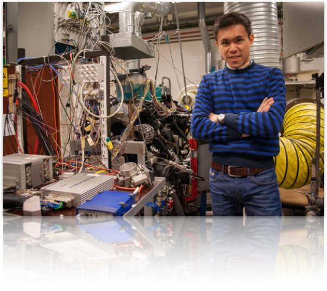

About Me
Education
Monash University, Malaysia
-
•Ph.D. Candidate, Control Engineering and Fault Diagnosis, 2009
Thesis: “Advancements In Robust Fault Reconstruction Using Sliding Mode Observers” -
•B.Eng (Hons), Electrical and Computer Systems Engineering, 2006
Current Employment and Affiliations
Lecturer in Mechatronics Engineering and Control June, 2017 – Present
Ulster University, Northern Ireland, U.K.
I am responsible for Control Engineering related modules taught to undergraduate and postgraduate students. I am teaching the following units:
-
•EEE316 Control Theory and Applications
-
•EEE526 Mechatronics 1
Research wise, I am attached to the Nanotechnology and Integrated BioEngineering Centre (NIBEC) at the Jordanstown Campus, where I am part of the Sensor and Embedded Computing Systems Research Group, working mainly on the signal processing and data analytics of biomedical signals for anomaly detection and classification.
Adjunct Senior Research Fellow May, 2017 – Present
Monash University, Malaysia
Adjunct Researcher March, 2016 – Present
Linköping University and Volvo Car Corporation, Sweden
Collaborators: Prof. Erik Frisk, Assoc. Prof. Mattias Krysander, and Dr Daniel Jung
Past Employments and Affiliations
Senior Lecturer January, 2016 – May, 2017
Lecturer July, 2009 – December, 2015
Monash University, Malaysia
I was responsible as the coordinator of a few units related to Control Engineering for various disciplines offered at the campus. I developed a new unit, ECE3062 Electronic Systems and Control, which is offered at both Monash University Malaysia and Australia campuses. I was an active researcher especially in the area of Fault Diagnosis with quality publications in international peer-reviewed journal articles, including the prestigious Automatica. I also conducted trainings and am involved in a few consulting projects with the industry. I have taught the following units:
• ECE2061 Analogue Circuits, 2016 – 2017
• ECE2031 Circuits and Control, 2015
-
•ECE3062 Electronic Systems & Control (a unit I developed for Monash), 2011 – 2013
-
•ENG1030 Electrical Systems, 2011 – 2013
-
•ECE2021 Electromagnetism, 2010 – 2012, 2015 – 2016
-
•MEC3457 Systems and Control, 2010 – 2011
-
•ECE3031 Control Systems, 2010
-
•ENG1020 Engineering Structures, 2009
-
•ENG1060 Computing for Engineers, 2006 – 2009
Visiting Researcher Jan, 2016 – Feb, 2016
Linköping University and Volvo Car Corporation, Sweden
Collaborators: Prof. Erik Frisk, Assoc. Prof. Mattias Krysander, and Dr Daniel Jung
I continued to work on the project described under my position as a Postdoctoral Fellow with the same institution. Besides further developing the FI scheme on paper and via simulations, the project also progresed to the testing of the designed FI schemes onto the actual engine in the Engine Lab via the dSPACE control system.
Postdoctoral Fellow June, 2014 – May 2015
Linköping University and Volvo Car Corporation, Sweden
Supervisor: Prof. Erik Frisk
I was based in the Division of Vehicular Systems (FS) at Linköping University, Sweden where I worked on Fault Diagnosis of Single-Turbocharged Gasoline Engine with Volvo Car Corporation (Volvo).
I also developed the GUI-based Simulation Environment on MATLAB and Simulink to be used by Volvo for the following:
-
•Realistic modelling and control of the engine
-
•Injection and simulation of a variety of actuator, sensor and variable faults in the engine
-
•In-house designed algorithm for additional residuals selection
-
•In-house designed algorithms for alarm generations, residuals monitoring as well as Fault Isolation (FI)
-
•Simulation and FI of system with intermittent residuals
Honours and Awards
-
•Fellow of Higher Education Academy, UK (FHEA), 2018
-
•Erasmus+ Staff Mobility Program to Augsburg University of Applied Sciences, Germany, 2018
-
•Monash University Malaysia PVC’s Award for Excellence in Research, Round 1, 2012
-
•Letter of Commendation for Excellence Unit Evaluation Result from the Associate-Dean (Education), Faculty of Engineering, Monash University Australia, 2012
-
•Top 50 Best Units Offered by Faculty of Engineering (ranked #22) Across All Campuses of Monash University, 2010
-
•Monash University Malaysia PVC’s Award for Excellence in Teaching, Round 2, 2011
-
•Monash University Malaysia PVC’s Award for Excellence in Teaching, Round 1, 2011
-
•Monash University Malaysia PVC’s Award for Excellence in Teaching, Round 2, 2010
-
•Monash University Malaysia PVC’s Award for Excellence in Teaching, Round 1, 2010
-
•Monash University Malaysia PVC’s Award for Excellence in Teaching, Round 2, 2009
-
•Higher Degree by Research Scholarship for Ph.D. in Engineering, 2007
-
•Postgraduate Research Scholarship for Master of Engineering Science by Research, 2006
-
•Monash University Malaysia Entrance Scholarship, 2002
Name: Mark Kok Yew Ng
Email: nkymark [at] ieee [dot] org
Favorite Quote: “If you remove the impossible, whatever remains, however improbable, must be the truth”
~S. Holmes~
Research interests:
-
• Fault diagnosis and anomaly detection
-
• Vehicular systems
-
• Modelling
-
• Signal processing and data analytics
-
• Machine learning
My professional links:
My CV can be found here.
